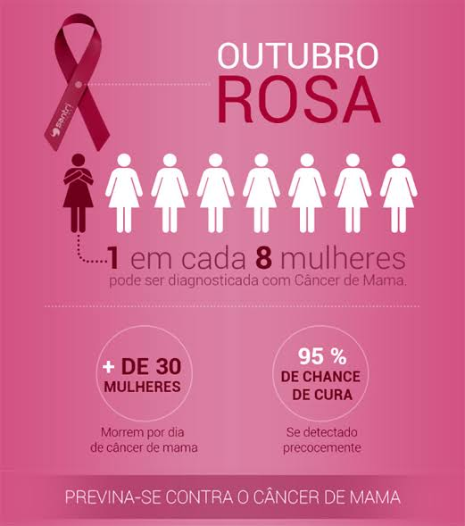
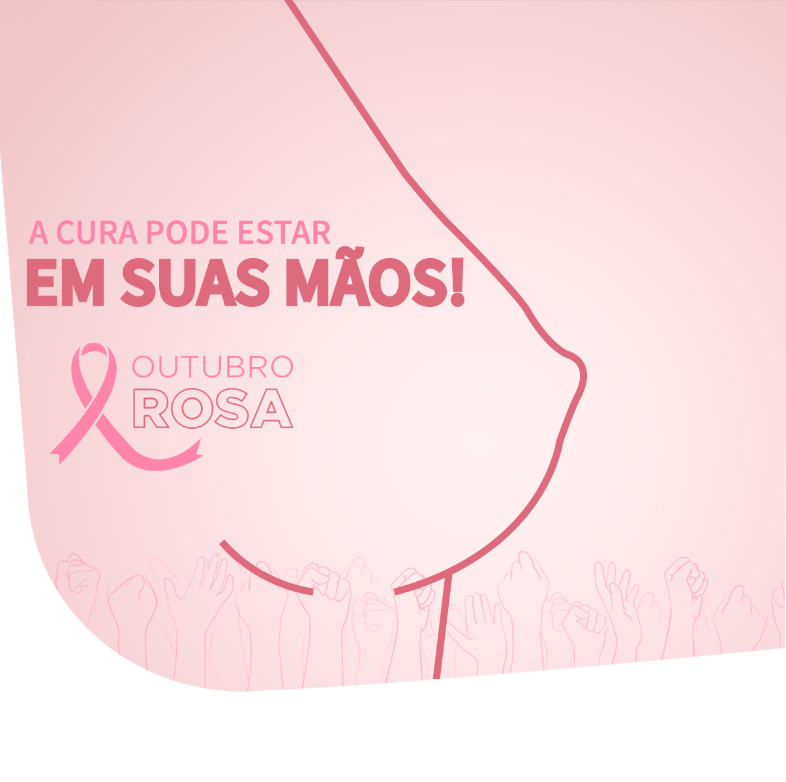
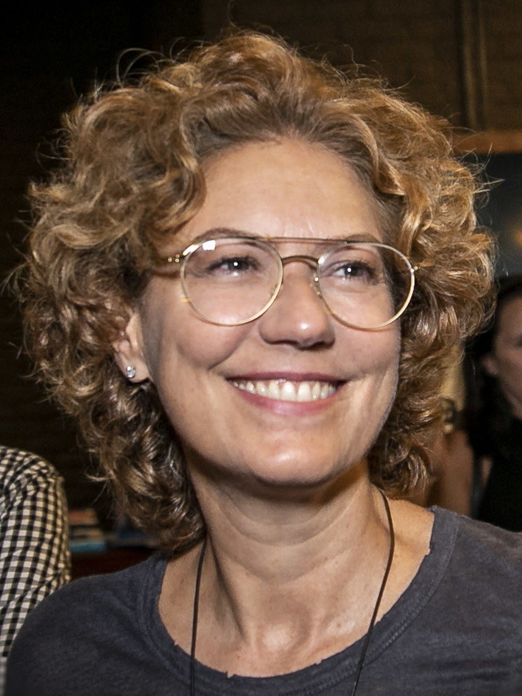
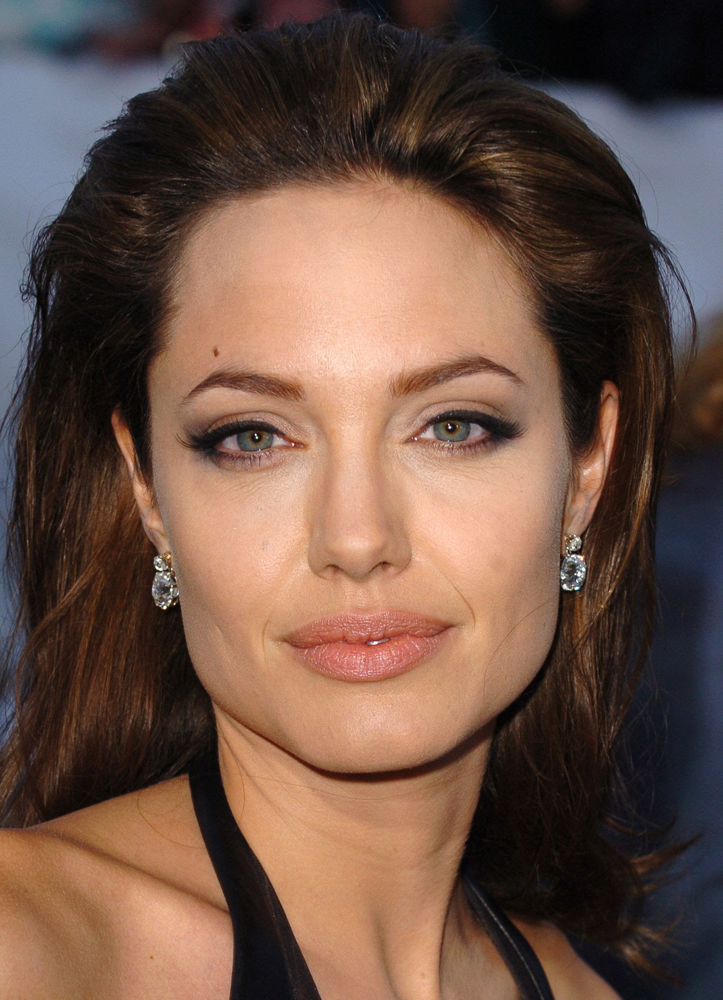
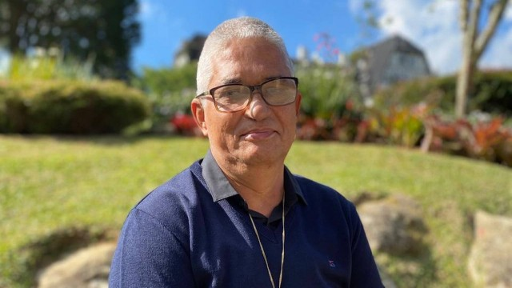

How did the Pink October start?
The Pink October began in the United States at the end of the 20th century, when many states came together to raise citizens' awareness of the disease and with the approval of the U.S. Congress, it became known as the month of breast cancer prevention and awareness. This movement bears as a symbol a pink bow, which was used by the participants of the Healing Race that took place in New York in the 1990s. In this race, participants from all over the country, that was in treatment or had already been in cancer treatment. Soon, hospitals began distributing the bonds as a means of dissemination and fundraising for cancer research.

In Brazil
In our country, the Pink October began to be marked in 2002, when the Obelisk of Ibirapuera (Mausoleum of the Constitutionalist Soldier) in São Paulo, was all illuminated in pink and soon the idea spread to more sights.
Statistics
The National Cancer Institute (INCA) estimates that for each year of the triennium 2020/2022, 66,280 new cases of breast cancer are diagnosed in Brazil, with an estimated risk of 61.61 cases per 100,000 women.
Which age group has the highest incidence of breast cancer in women?
Breast cancer has higher incidence after 60 years, but disease behavior is more aggressive in young women. If diagnosed at first, chances of cure are above 90%.

What percentage of women have breast cancer?
Breast cancer is the most common in women in the world, with approximately 2.3 million new cases estimated in 2020, representing 24.5% of new cases of cancer in women.
Does have breast cancer in men?
Men are diagnosed on average at age 72. Family history. The risk of breast cancer increases if close relatives of the family have had breast cancer. About 20% of men with breast cancer have a close relative (male or female) with the disease.

What is the percentage of breast cancer in men?
Breast cancer affects 1% of the male population and is more prevalent in obese and etilist men. Men should be alerted and informed about breast cancer as well. Compared to women, breast cancer is rarer, with an incidence of approximately 1% in the male population in general.
More than 17,500 women and almost 200 men die of breast cancer in Brazil each year. At least 48 people die daily from this tumor.
Cure
Breast cancer is an uncontrolled growth of cells (cells of the lobes, milk-producing cells, or ducts, through which milk is drained), which acquire abnormal characteristics, caused by one or more mutations in their genetic material.

When mutations occur in the genetic material of one or more cells, they can acquire the ability not only to divide uncontrolled, but also to prevent cell death that would be normal in the life cycle of any cell in the body, and also to invade nearby tissues. It's these cells that give rise to cancer.
Breast cancer can be cured. The sooner it is detected, the easier it will be to cure it. If at diagnosis the tumor is less than 1 centimeter (initial stage), the chances of cure reach 95%.
Prevention:
1. Practice physical activity
Balances hormone levels, improves the body's defense and helps in maintaining proper weight, factors that directly influence breast cancer prevention.
2. Eating healthy and maintaining proper body weight
Excess weight generates hormonal changes that can cause mutations in cells or growth of already altered cells. Therefore, maintaining the proper weight is critical to prevent this from happening.
3. Avoid the consumption of alcoholic beverages
Alcohol can help in the onset of cancer by different mechanisms (damages DNA, makes human tissues more sensitive to damage, among others). Avoiding the ingestion of all types of alcoholic beverages favors the prevention not only of breast cancer, but of countless others.
4. Do not smoke and avoid passive smoking
Cigarettes and other smoke producers (hookah, cigar, cigarillo, among others) contain at least 69 chemicals that cause cancer. Avoiding smoking or being around people who smoke are important measures that can contribute to prevention.
5. Breastfeeding
During the lactation period, the rates of some hormones that favor the development of this type of cancer fall in women. In addition, in breastfeeding there is also renewal of cells that could have lesions, thus decreasing the chances of the disease. The longer breastfeeding is, the greater the protection for the mother.

Famous who have overcome breast cancer:
Patricia Pillar

The actress has spoken several times about the importance of self-examination, the method by which she discovered the disease almost 20 years ago in 2002. Patricia lived a tough battle: she was diagnosed with Paget's Disease, a rare case of breast cancer, and already in serious condition. The disease spread through her bones, which led to surgeries and chemotherapy sessions.
Angelina Jolie

In 2013, the actress gave the talking when announcing that only for the possibility of developing the disease would do breast removal surgery. After hearing from doctors that due to her family history, she had an 87% chance of manifesting the disease, Jolie underwent a preventive double mastectomy.
Elba Ramalho
")
Upon noticing hormonal changes and a change in a cyst she already had in her breast, Elba sought medical help, which diagnosed her. Because he was diagnosed early, the treatment was not evasive for singer. "When he (the doctor) said it was cancer, I thought it was Faustão's prank. It wasn't possible, i didn't have a case in the family... I'd ask on my knees anyway, I've got calluses on both of us to this day. He said, 'Help me, I can't do it myself.' This year I spent on my knees was transformative because I evolved emotionally like never before."
Men with breast cancer:
Roberto Sereno

During a routine examination with his cardiologist in 2018, he was instructed to have a mammogram, in which two nodules were identified in his left breast. Four months later, he had a mastectomy and began chemotherapy. "The day I received the diagnosis, I was in shock. However, I had the support of my wife, my children, my sister and nieces, who helped me a lot, especially in chemotherapy. Family is really our base.”